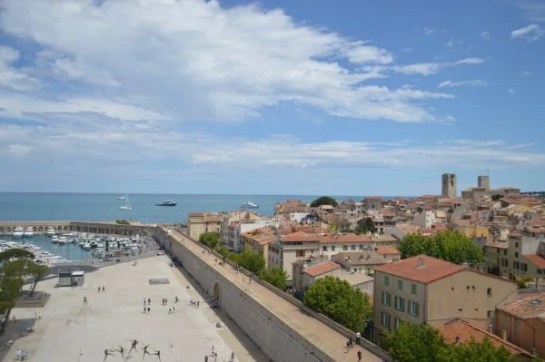

Qui sommes-nous ?
Une association antiboise indépendante, ouverte à tous, qui agit à son échelle pour une ville plus solidaire.
Une association de terrain, au service de tous
L’AUSA est une association loi 1901 indépendante. Elle a pour vocation de favoriser la solidarité, l’entraide, l’éducation, l’insertion et le lien social à Antibes et dans ses environs.
Elle s’adresse à l’ensemble de la population, sans distinction d’origine, de culture ou de conviction. Notre ambition est simple : contribuer positivement à la vie locale, proposer des initiatives utiles, accompagner les personnes qui en ont besoin et favoriser les échanges entre les habitants.

D’où nous venons
L’AUSA a été fondée le 6 mai 2026 à Antibes par deux membres fondateurs, Hamdi NAGMAR et Elton SKENDERAJ, avec la volonté de donner un cadre propre, durable et ouvert à des actions d’éducation, d’entraide et de solidarité.
Notre histoire et certains de nos engagements sont liés à la vie associative qui s’est développée autour de la mosquée d’Antibes. Nous en sommes fiers, mais notre identité ne s’y résume pas : l’AUSA s’est construite pour agir dans la vie sociale, éducative, culturelle et solidaire de toute la commune.
- 6 mai 2026 — Assemblée générale constitutiveAdoption des statuts et du règlement intérieur, fixation du siège social à la Maison des Associations d’Antibes, élection du bureau fondateur.
- 7 mai 2026 — Déclaration en préfectureDéclaration de création auprès de la préfecture des Alpes-Maritimes, enregistrée sous le n° RNA W061018627 (récépissé du 11 mai 2026).
- Aujourd’hui — Premiers pasStructuration de l’association, mobilisation des premiers bénévoles, lancement de ce site et recherche de partenaires et d’un lieu d’accueil.
Indépendants, et fiers de travailler avec les autres
L’AUSA possède sa propre identité associative : ses statuts, son cadre juridique, ses objectifs et son champ d’action. Elle n’est rattachée à aucune autre structure. Toute collaboration fait l’objet d’une convention écrite.
Nos actions sont menées dans le respect de la dignité humaine, sans aucune discrimination et dans un principe de neutralité politique, religieuse et idéologique. Nos fonds restent strictement séparés de ceux de nos partenaires, et aucun fonds de nature cultuelle ne transite par les comptes de l’AUSA.
Nous croyons au travail collectif. C’est pourquoi nous distinguons toujours clairement ce que nous portons nous-mêmes, ce que nous menons avec d’autres, et ce à quoi nous apportons simplement notre concours. Nous valorisons le travail de nos partenaires, sans jamais nous l’attribuer.
Agir aujourd’hui à notre échelle, construire davantage demain
Nous voulons être une association sur laquelle on peut compter : présente, sérieuse, et fidèle à ses engagements.
Agir concrètement
Des actions simples, utiles et accessibles, menées avec rigueur et dans la durée.
Fédérer
Rassembler les bonnes volontés et travailler en confiance avec les acteurs du territoire.
Grandir pas à pas
Développer de nouveaux projets au rythme de nos moyens, sans promettre plus que ce que nous pouvons tenir.
Ce qui guide chacune de nos actions
- Solidarité et entraideNul ne devrait rester seul face aux difficultés.
- Éducation et transmissionLe savoir et l’expérience se partagent.
- Respect et dignité humaineChaque personne mérite considération et discrétion.
- Engagement citoyenPrendre part, positivement, à la vie de la cité.
- Fraternité et vivre-ensembleCe qui nous rassemble est plus fort que ce qui nous distingue.
- Ouverture et dialogueNous avançons en écoutant et en échangeant.
Le bureau de l’association
L’AUSA est administrée par un bureau élu pour deux ans. À sa création, il est composé des deux membres fondateurs ; il a vocation à s’élargir progressivement, par cooptation, à de nouveaux membres engagés.
Hamdi NAGMAR
Président & Secrétaire · membre fondateur
Elton SKENDERAJ
Vice-Président & Trésorier · membre fondateur
Découvrez ce que nous faisons
Éducation, solidarité, insertion, cohésion sociale : nos actions concrètes à Antibes.